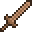
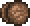
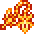

The melee class is powerful, sporting high defense and damage as well as decent crowd control. It utilizes weapons such as swords, spears, sickles, boomerangs, flails, and yoyos. Many melee weapons have a short attack range, and those that are viable at a distance tend to do lower damage than their close-range counterparts. Melee users are good at taking lots of hits without losing lots of health, which helps with tougher enemies and Bosses. Melee is generally the most straight-forward class, as using the weapons and dealing decent damage with them doesn't require any help.
Melee has also some subclasses wich is fun to play as challange
- Swordsman 
- The most straight-forward of all subclasses. Swords only; no lances, flails, or otherwise. Even from the start, the swordsman has quick access to powerful weapons, such as the Enchanted Sword, or even the Arkhalis. Ironically though, this forbids the use of Solar Eruption and Daybreak; some of vanilla’s strongest melee weapons.
- Yo-yo Artist 
- A unique subclass straight from vanilla. Ignoring projectiles, yo-yos have the greatest reach and control of all melee weapons—if not all weapons in general. Unfortunately, they are often ignored for their childish aspect.
- Ex-Sword 
- A strange underdog of the subclasses. Limited to flails, lances, boomerangs, and tools. Unable to use ‘standard’ melee weapons, one has to be eccentric to play this. Ironically, this is the only subclass that can use Solar Eruption and Daybreak.